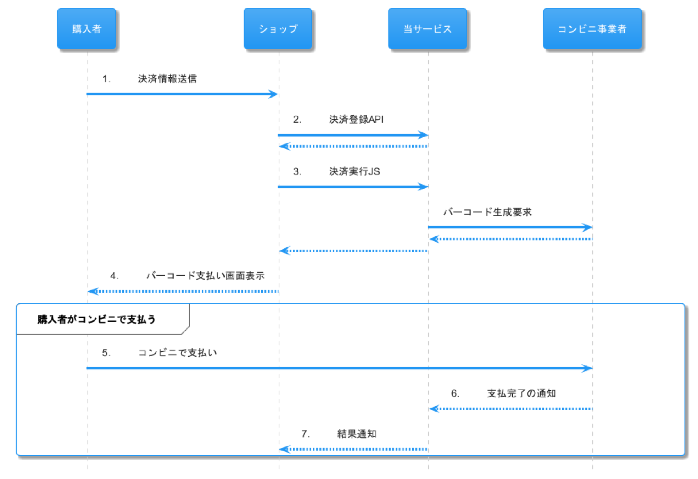

执行支付处理
fincode 的便利店支付，是使用 fincode API 响应返回的条形码图片构建 GUI，购买者在便利店门店出示包含该条形码图片的 GUI 后完成支付。
仅凭一张条形码图片，即可由 fincode 支持的所有便利店服务商进行读取，因此开发者无须事先确认购买者将在哪一家便利店支付。
使用支付执行 API
- 购买者选择便利店支付作为支付方式。
- 店铺在 fincode 中进行支付注册。
- 店铺在 fincode 中进行支付执行。fincode 向便利店服务商请求发行条形码，并返回条形码。
- 店铺显示条形码支付页面。
- 购买者在便利店出示条形码支付页面并完成支付。
- 便利店服务商向 fincode 发送支付完成通知。
7. fincode 将相应交易设为销售额已确定，并向店铺发送支付通知的结果通知。
使用支付执行 JS
使用支付执行 JS，即可轻松地从前端应用实现便利店支付的支付执行处理。

- 购买者选择便利店支付作为支付方式。
- 店铺在 fincode 中进行支付注册。
- 店铺在 fincode 中进行支付执行 JS。fincode 向便利店服务商请求发行条形码，并返回条形码。
- 店铺显示条形码支付页面。
- 购买者在便利店出示条形码支付页面并完成支付。
- 便利店服务商向 fincode 发送支付完成通知。
- fincode 将相应交易设为销售额已确定，并向店铺发送支付通知的结果通知。